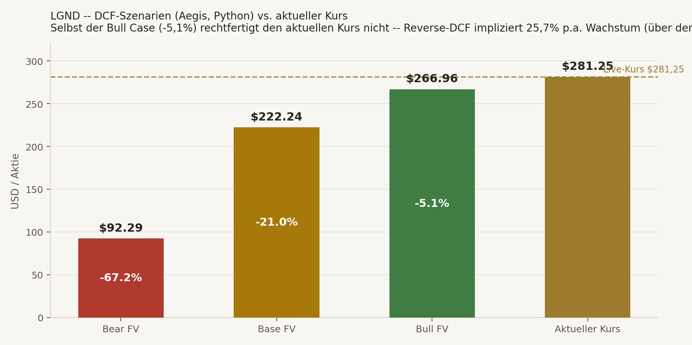
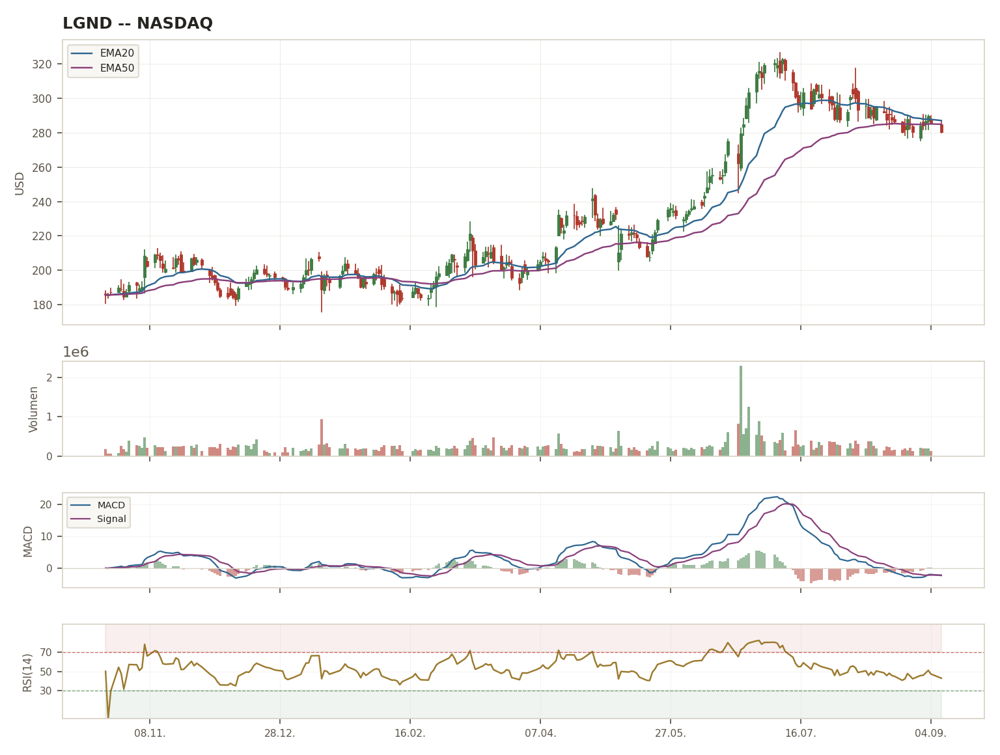

Was LGND macht. Ligand Pharmaceuticals ist kein operatives Pharma-Unternehmen im klassischen Sinn, sondern ein Biopharma-Royalty-Aggregator — Geschäftsmodell analog zu Royalty Pharma (RPRX), deutlich kleiner. Ligand erwirbt/finanziert Lizenz-, Meilenstein- und Royalty-Ansprüche an Medikamenten Dritter, ohne selbst F&E oder Vertrieb zu betreiben. Das Modell ist strukturell margenstark: kein eigener Produktions- oder Vertriebsapparat für die lizenzierten Produkte, dafür hohe, wiederkehrende Lizenzeinnahmen mit Bruttomargen im hohen 90%-Bereich.
Der Wendepunkt 2026. Die Übernahme der XOMA Royalty Corporation (Closing 25.06.2026) verdoppelt das Royalty-Portfolio auf 200+ Assets — die mit Abstand wichtigste strukturelle Veränderung des Geschäftsjahres. Finanziert wurde der Deal über $700 Mio. Convertible Senior Notes (Basis $625 Mio. + voll ausgeübte Über-Zuteilungsoption $75 Mio., Netto-Erlös ca. $678,2 Mio.) — die Bilanz sieht danach strukturell anders aus als vorher.
Warum trotzdem SCHROTT/DURCHGEFALLEN. Alle drei unabhängigen Analysen dieses Cross-Checks — Jacks harte DNA-Kriterien, Conans Asymmetrie-/Outcome-Modell und Aegis' eigene Python-DCF — kommen unabhängig voneinander zum selben Grundbefund: der aktuelle Kurs preist mehr Wachstum ein, als das Unternehmen nach eigener, methodisch sauberer Herleitung realistisch liefern kann. Das ist kein Urteil über die Qualität des Geschäftsmodells (die ist ordentlich), sondern über den Preis, den der Markt heute dafür verlangt.
Der zentrale Fund. Aegis' Reverse-DCF zeigt: der Markt preist ein implizites Wachstum von 25,7% p.a. ein — das liegt SELBST über dem eigenen, bereits gedeckelten Bull-Case-Wachstum von 20% p.a. Selbst im optimistischsten Szenario, das die Methodik überhaupt zulässt, wäre der faire Wert noch unter dem aktuellen Kurs. Diese Erwartungslücke ist der rote Faden, der sich durch alle drei unabhängigen Analysen zieht.
NICHT KAUFEN
DCF Base -21,0% · Bull noch -5,1% unter Kurs · Reverse-DCF-g über Bull-Deckel
SCHROTT
Agent Score 2/10 · DNA-Abbruch: nur 2/5 K-Kriterien erfüllt
DURCHGEFALLEN
Scout Score 4/10 · EV-Multiple 1,07x RED · kein Scout-Setup
| K-Kriterium | Schwelle | Ist-Wert | Tag | Status |
|---|---|---|---|---|
| ROIC | >20% | ~10,5% | T | ❌ Nicht erfüllt |
| FCF-Marge (real) | ≥20% | ~98,3% | T | ✅ Erfüllt |
| EPS-CAGR (5J) | ≥12% | -15,2% | T | ❌ Nicht erfüllt |
| Net Debt/EBITDA | <2,0x | ~2,59x | T | ❌ Nicht erfüllt |
| Bruttomarge | ≥60% | ~98,7% | T | ✅ Erfüllt |
DNA-Urteil: 2/5 K-Kriterien erfüllt. Abbruch-Logik (FULL DEEP DIVE: K ≤ K-BASIS-2 → Abbruch): 2 ≤ 3 → Sofort-Abbruch ausgelöst. Zusätzliche Flags: SBC-Intensity ~19,7% des Umsatzes (über der 15%-Infection-Schwelle) → Verwässerungswarnung. Moat-Einschätzung trotz Abbruch: SOLIDE, Trend STRENGTHENING (XOMA-Portfolioverdopplung verbessert Diversifikation strukturell) — das Geschäftsmodell selbst ist also nicht das Problem.
⚠ Einordnung: Jacks ROIC-/EPS-CAGR-Werte sind eigene [TRAINING]-Herleitungen aus der Bridge-Analyse, nicht von Aegis unabhängig primärquellen-verifiziert (siehe Datenintegritäts-Hinweis Seite 4). Das Gesamtbild bleibt aber robust, da Conans und Aegis' Valuation-Urteile über einen völlig anderen Rechenweg zum selben "nicht attraktiv"-Ergebnis kommen.
Conans erster Befund war methodisch, nicht inhaltlich: LGND ist kein klassischer Frühphasen-Scout-Kandidat — kein SaaS/ARR, kein Pre-Revenue, kein Deep-Tech-Hardware, kein klinisches Pre-Revenue-Biotech. Keiner der vier Sektor-Overrides passt sauber. Conan wählte trotzdem "NONE_APPLICABLE" als expliziten Override und führte die Analyse als ehrlichen Zweit-Check durch, statt sich eine unpassende Kategorie zu erzwingen — genau das macht den negativen Befund aussagekräftiger: Conan wollte LGND eigentlich gar nicht ablehnen müssen, kam aber trotzdem zum selben Ergebnis wie Jack.
| ① Struktureller Vorsprung | 0,5/1 |
| ② Early-Adopter-Qualität | 0,5/1 |
| ③ Skalierungslogik | 1/1 |
| ④ Wettbewerbsfenster | 0/1 |
Moat-in-Formation: 2/4 — 🟠 SCHWACH. Royalty-Finanzierung ist kein geschütztes Monopol; gute Assets werden auktioniert, Kapitalkosten sind der Kernwettbewerbsfaktor. Reicht nicht für Kandidaten-Status im Scout-Sinn.
3/5. CEO Todd Davis — solider Profi-Operator, kein außergewöhnlicher Founder-Compounding-Beweis. XOMA-Übernahme strategisch kohärent, erhöht aber Leverage/Integrationsrisiko. Q1-2026-Miss zeigt: Erwartungsmanagement nicht risikofrei.
| Bucket | Wahrsch. | Multipl. |
|---|---|---|
| Totalverlust | 2% | 0,00x |
| Enttäuschung | 63% | 0,65x |
| Marktrendite | 32% | 1,50x |
| Multibagger | 3% | 6,00x |
| Tenbagger+ | 0% | 15,00x |
EV-Multiple: 1,07x → 🔴 RED. Nominal knapp über 1x, aber weit unter dem, was ein Scout-Setup rechtfertigen müsste. Downside-Summe (Totalverlust+Enttäuschung) 65% — deutlich über der Base-Rate-Floor-Regel (40-50%).
🟢 CLEAN — kein Betrugs-/Promotion-Case. Aktive Flags stattdessen ökonomisch: Supply-Overhang ($700 Mio. Convertible Notes als potenzieller Verwässerungs-/Bewertungs-Overhang) und Klumpenrisiko (Top-Produkt-Konzentration pre-XOMA nicht sauber quantifiziert).

| Szenario | Fair Value | Δ vs. Kurs |
|---|---|---|
| Bear | $92,29 | -67,2% |
| Base | $222,24 | -21,0% |
| Bull | $266,96 | -5,1% |
g gecappt bei 20% (Deckel erreicht, FCF-CAGR-Basis). Reverse-DCF impliziertes Wachstum: 25,7% p.a. — liegt SELBST über dem Bull-Case-Wachstumsdeckel. Downside-Boden (nur begrenzt belastbar): $57,54.
Diese DCF kombiniert eine PRE-XOMA Cash-/FCF-Basis (Stand 31.12.2025: Cash $733,5 Mio., Real FCF FY2025 $142,1 Mio.) mit einer POST-XOMA Schuldenlast (~$1.160 Mio. Total Debt nach Notes-Closing 25.06.2026) — ein zeitlicher Snapshot-Mismatch, da vollständige Post-Merger-Quartalszahlen (Q3 2026) erst im November 2026 vorliegen. Netto-Effekt: eher konservativ als optimistisch — die Rechnung nutzt einen alten (niedrigeren) Cashflow-Basiswert mit einer neuen (höheren) Schuldenlast, was den Fair Value tendenziell nach unten drückt, nicht nach oben. Selbst mit diesem konservativen Bias bleibt der aktuelle Kurs oberhalb aller drei Szenarien.
Beta-Diskrepanz: Motley Fool ≈1,06 vs. TradingView ≈0,83, Jacks eigene Live-Abfrage (Yahoo Finance) ≈0,94 — nahe am von Aegis genutzten Mittel (0,95). Keine der Quellen ist eindeutig autoritativ; Konsens liegt im Bereich 0,9-1,0 (marktkorreliert, leicht defensiv).
Top-Produkt-Konzentration: Hinweise auf relevante Konzentration pre-XOMA vorhanden, genaue Prozentzahl nicht verlässlich recherchierbar [N/V]/[TRAINING]. Nach der Portfolioverdopplung strukturell voraussichtlich verbessert, aber noch nicht durch Post-Merger-Zahlen bestätigt — ein echter, offener Prüfpunkt für Q3/Q4 2026.

LGND bleibt als "Profi"-Watchlist-Eintrag erhalten (Geschäftsmodell ordentlich, Moat SOLIDE/STRENGTHENING laut Jack), die CRV-Ampel wird aber von der vorläufigen Jarvis-Solo-Einschätzung auf 🟠 Vorsicht/Teuer aktualisiert — nicht 🔴 Meiden, da kein strukturelles Geschäftsmodell-Problem vorliegt, sondern eine reine Bewertungsfrage zum aktuellen Kurs. Neuer Vertiefungs-Trigger: erste vollständige Post-XOMA-Quartalszahlen (Q3 2026, erwartet November 2026) — dann DNA-Check und DCF mit sauberer, nicht-gemischter Datenbasis wiederholen.
Drei strukturell unabhängige Methoden — harte K-Kriterien-Gatekeeper (Jack), Asymmetrie-/Outcome-Wahrscheinlichkeits-Modell (Conan) und eine eigenständige Python-DCF mit Reverse-DCF-Sanity-Check (Aegis) — kamen unabhängig voneinander zum selben Grundbefund, obwohl keine der drei Methoden auf die anderen beiden Bezug nahm. Das ist ein deutlich robusteres Signal als eine einzelne Analyse mit demselben Ergebnis, und rechtfertigt die vorsichtige CRV-Herabstufung trotz eines grundsätzlich soliden Geschäftsmodells.